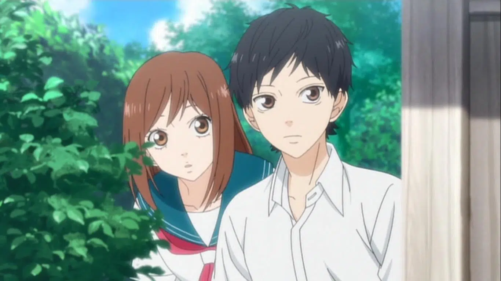
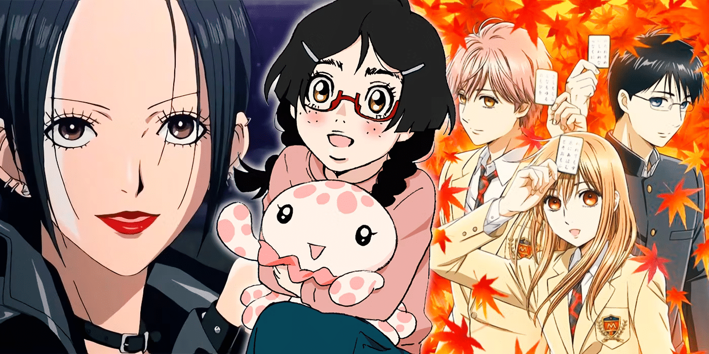

Les animés
Un Animé , également appelé parfois Japanime, désigne une série d'animation ou un film d'animation en provenance du Japon souvent adapté d'un Manga. C'est le diminutif du mot animeshon,lui-meme transcription de l'anglais animation. Il existe néanmoins plusieurs type d'animé:
-
Le Shonen
Le shonen manga (Bande déssiné pour petit garcon) est une ligne éditoriale de manga dont la cible est à l'origine constituée d'adolescents et de jeunes de genre masculin, contrairement au Shojo manga qui se veut etre une ligné éditoriale pour un public féminin. Le shojo
Le Shojo manga (Bande dessinée pour fille) est une catégorie éditoriale du Manga, aussi parfois qualifié de genre qui cible un public féminin, adolescent ou jeune adulte. Elle est avec le Shonen manga et le senin manga, l'une des trois principales catégories éditoriales du manga dédiés qui peuvent se spécialiser sur une tranche d'age du lectorat ou sur un genre narratif. Le Seinin
Le Seinin manga (manga pour jeune homme ) est utilisé pour désigner une ligné éditoriale de manga, dont la cible est avant tout constituée par le jeunes adultes de sexe masculin. Le genre est à opposer au Josei manga , (manga pour jeune femme). -
Le Josei
Le Josei manga (manga pour femme ), aussi connu sous les noms de ladies'comic ,est une catégorie éditoriale de manga, aussi parfois qualifié de genre, apparue dans les années 1980.


Formellement le josei se destine à un public de femme adultes, insérées dans la vie active et/ou mariées et s'adresse ainsi à un lectorat plus agé que celui du shojo manga, destiné aux adolescentes et femmes jeunes adultes. Le josei manga est traditionnellement publié dans des magazines de prépublication de manga dédiés, qui peuvent se spécialiser sur un genre narratif. 
-
genre aventure
-
Sous genre Isekai
-
Genre
-
etc.